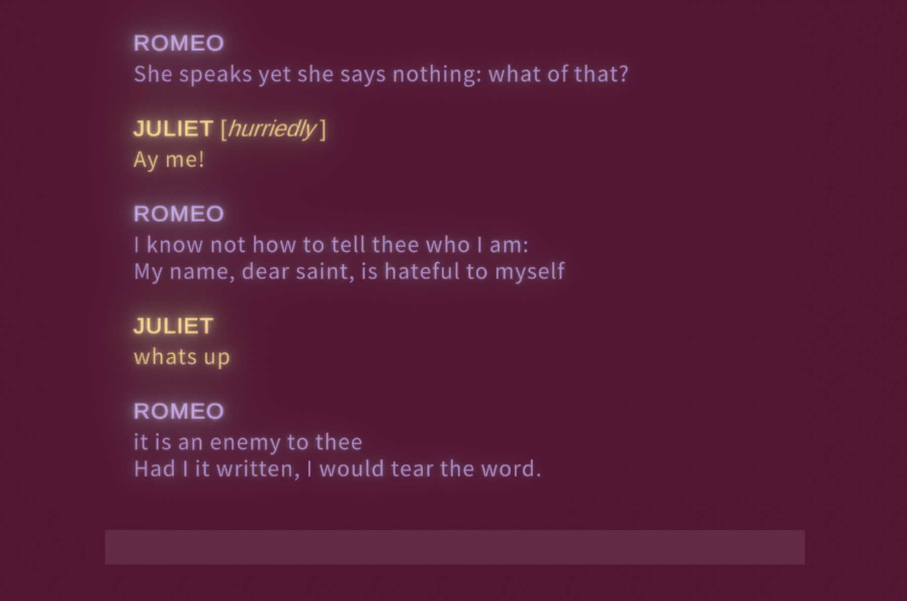
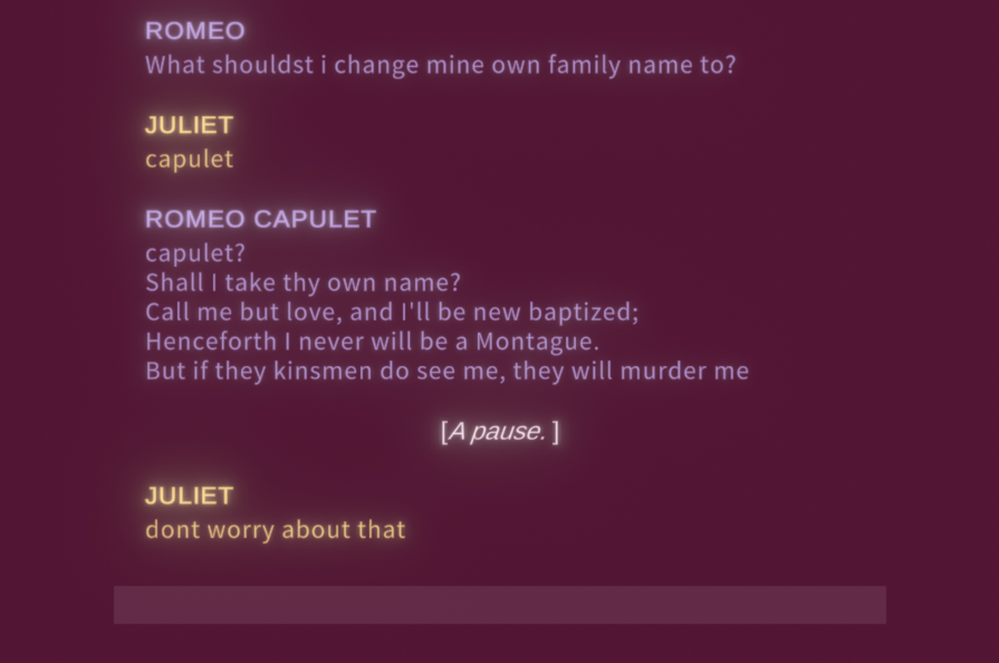
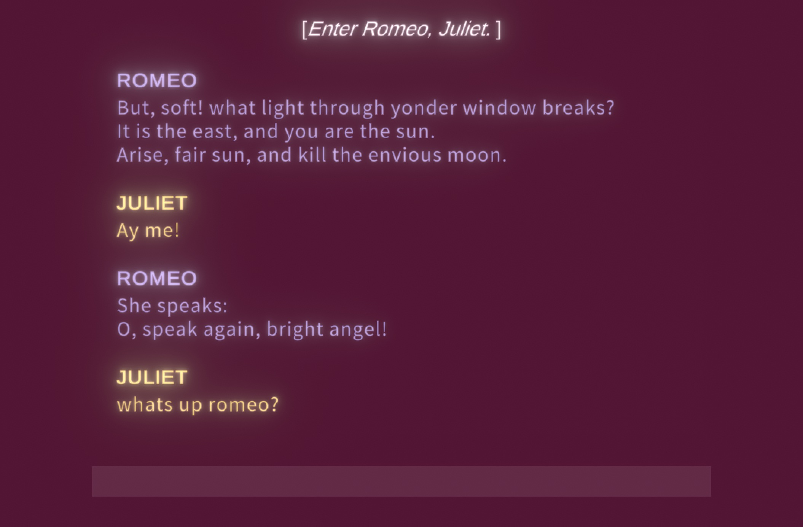
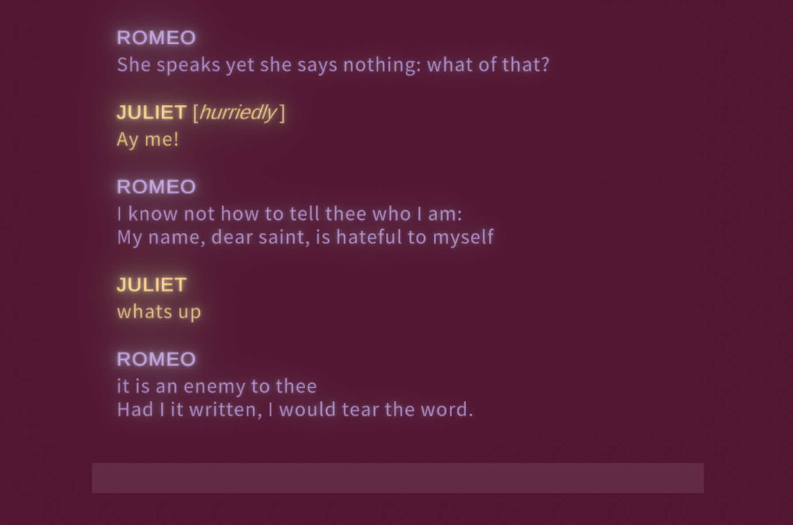
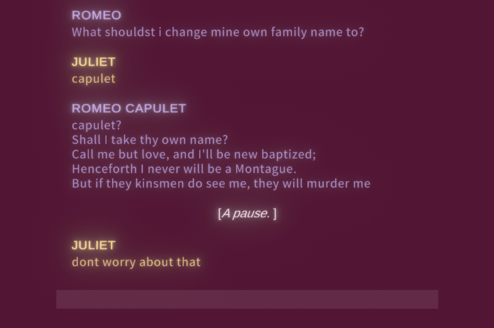
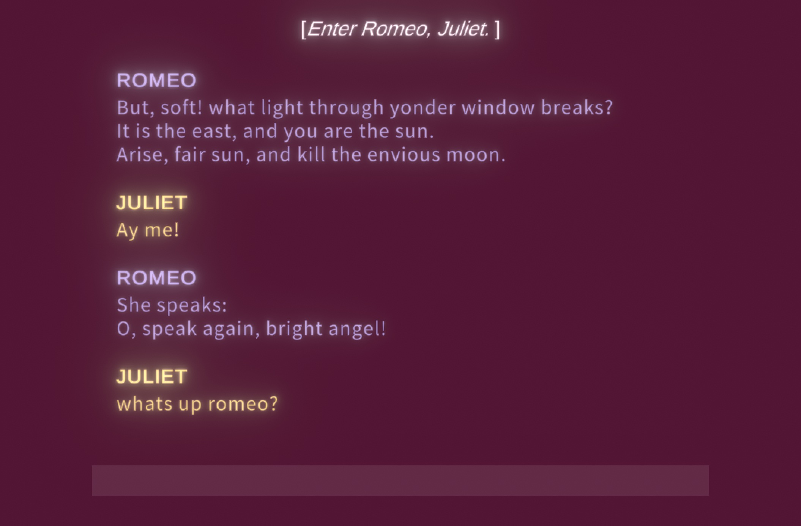

Speak Again, Bright Angel is a free-will narrative game based on Romeo and Juliet. The player plays as Juliet, and can talk to Romeo in the format of a chatbot. Almost all of Romeo's responses are actual lines from Shakespeare's play.
Speak Again, Bright Angel is a solo-project that I developed in Unity. It was created for a three-week-long game jam with the prompt "Shakespeare."
 




